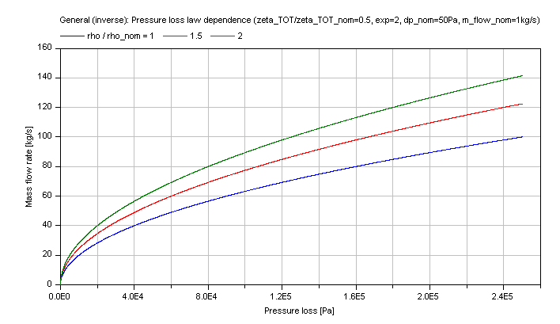

Modelica.Fluid.Dissipation.Utilities.SharedDocumentation.PressureLoss.General
Modelica.Fluid.Dissipation.Utilities.SharedDocumentation.PressureLoss.General
Modelica.Fluid.Dissipation.Utilities.SharedDocumentation.PressureLoss.General
Modelica.Fluid.Dissipation.Utilities.SharedDocumentation.PressureLoss.General| Name | Description |
|---|---|
Modelica.Fluid.Dissipation.Utilities.SharedDocumentation.PressureLoss.General.dp_idealGasCalculation of a generic pressure loss for an ideal gas using mean density.
This function shall be used inside of the restricted limits according to the referenced literature.
The geometry parameters of energy devices necessary for the pressure loss calculations are often not exactly known. Therefore the modelling of the detailed pressure loss calculation has to be simplified.
The pressure loss dp for the compressible case [Mass flow rate = f(dp)] is determined by (Eq.1):
m_flow = (R_s/Km)^(1/exp)*(rho_m)^(1/exp)*dp^(1/exp)
for the underlying base equation using ideal gas law as follows:
dp^2 = p_2^2 - p_1^2 = Km*m_flow^exp*(T_2 + T_1)
dp = p_2 - p_1 = Km*m_flow^exp*T_m/p_m, Eq.2 with [dp] = Pa, [m_flow] = kg/s
so that the coefficient Km is calculated out of Eq.2:
Km = dp*R_s*rho_m / m_flow^exp , [Km] = [Pa^2/{(kg/s)^exp*K}]
where the mean density rho_m is calculated according to the ideal gas law out of an arithmetic mean pressure and temperature:
rho_m = p_m / (R_s*T_m) , p_m = (p_1 + p_2)/2 and T_m = (T_1 + T_2)/2.
with
| exp | as exponent of pressure loss law [-], |
| dp | as pressure loss [Pa], |
| Km | as coefficient w.r.t. mass flow rate! [Km] = [Pa^2/{(kg/s)^exp*K}], |
| m_flow | as mass flow rate [kg/s], |
| p_m = (p_2 + p_1)/2 | as mean pressure of ideal gas [Pa], |
| T_m = (T_2 + T_1)/2 | as mean temperature of ideal gas [K], |
| rho_m = p_m/(R_s*T_m) | as mean density of ideal gas [kg/m3], |
| R_s | as specific gas constant of ideal gas [J/(kgK)], |
| V_flow | as volume flow rate of ideal gas [m^3/s]. |
Furthermore the coefficient Km can be defined more detailed w.r.t. the definition of pressure loss if Km is not given as (e.g., measured) value. Generally pressure loss can be calculated due to local losses Km,LOC or frictional losses Km,FRI .
Pressure loss due to local losses gives the following definition of Km :
dp = zeta_LOC * (rho_m/2)*velocity^2 is leading to
Km,LOC = (8/π^2)*R_s*zeta_LOC/(d_hyd)^4, considering the cross sectional area of pipes.
and pressure loss due to friction is leading to
dp = lambda_FRI*L/d_hyd * (rho_m/2)*velocity^2
Km,FRI = (8/π^2)*R_s*lambda_FRI*L/(d_hyd)^5, considering the cross sectional area of pipes.
with
| dp | as pressure loss [Pa], |
| d_hyd | as hydraulic diameter of pipe [m], |
| Km,i | as coefficients w.r.t. mass flow rate! [Km] = [Pa^2/{(kg/s)^exp*K}], |
| lambda_FRI | as Darcy friction factor [-], |
| L | as length of pipe [m], |
| rho_m = p_m/(R_s*T_m) | as mean density of ideal gas [kg/m3], |
| velocity | as mean velocity [m/s], |
| zeta_LOC | as local resistance coefficient [-]. |
Note that the variables of this function are delivered in SI units so that the coefficient Km shall be given in SI units too.
Compressible case [Mass flow rate = f(dp)]:
The mass flow rate m_flow for different coefficients Km as parameter is shown in dependence of its pressure loss dp in the figure below.

Note that the verification for dp_idealGas is also valid for this inverse calculation due to using the same functions.
Modelica.Fluid.Dissipation.Utilities.SharedDocumentation.PressureLoss.General.dp_nominalDensityViscosityCalculation of a generic pressure loss in dependence of nominal fluid variables (e.g., nominal density, nominal dynamic viscosity) at an operation point via interpolation. This generic function considers the pressure loss law via a pressure loss exponent and the influence of density and dynamic viscosity on pressure loss.
The geometry parameters of energy devices necessary for the pressure loss calculations are often not exactly known. Therefore the modelling of the detailed pressure loss calculation has to be simplified. This function uses nominal variables (e.g., nominal pressure loss) at a known operation point of the energy device to interpolate the actual pressure loss according to a pressure loss law (exponent).
The generic pressure loss dp is determined for:
m_flow = m_flow_nom*[(dp/dp_nom)*(rho/rho_nom)]^(1/exp)*(eta_nom/eta)^(exp_eta/exp)
dp = dp_nom*(m_flow/m_flow_nom)^exp*(rho_nom/rho)*(eta/eta_nom)^exp_eta
with
| dp | as pressure loss [Pa], |
| dp_nom | as nominal pressure loss [Pa], |
| eta | as dynamic viscosity of fluid [kg/(ms)]. |
| eta_nom | as nominal dynamic viscosity of fluid [kg/(ms)]. |
| m_flow | as mass flow rate [kg/s], |
| m_flow_nom | as nominal mass flow rate [kg/s], |
| exp | as exponent of pressure loss calculation [-], |
| exp_eta | as exponent of dynamic viscosity dependence [-], |
| rho | as fluid density [kg/m3], |
| rho_nom | as nominal fluid density [kg/m3]. |
To avoid numerical difficulties this pressure loss function is linear smoothed for
m_flow ≤ (0.01*rho/rho_nom*(1/eta*eta_nom)^(exp_eta))^(1/exp) and
dp ≤ 0.01*dp_nom)
Note that the density (rho) and dynamic viscosity (eta) of the fluid are defined through the definition of the kinematic viscosity (nue).
nue = eta / rho
Therefore if you set both the exponent of dynamic viscosity (exp_eta == 1) and additionally a relation of density and dynamic viscosity there will be no difference for varying densities because the dynamic viscosities will vary in the same manner.
Incompressible case [Pressure loss = f(m_flow)]:
The generic pressure loss DP in dependence of the mass flow rate m_flow with different fluid densities and dynamic viscosity dependence as parameters is shown for a turbulent pressure loss regime (exp == 2) in the figure below.

Compressible case [Mass flow rate = f(dp)]:
The generic mass flow rate M_FLOW in dependence of the pressure loss dp at different fluid densities and dynamic viscosity as parameters is shown for a turbulent pressure loss regime (exp == 2) in the figure below.

Modelica.Fluid.Dissipation.Utilities.SharedDocumentation.PressureLoss.General.dp_nominalPressureLossLawDensityCalculation of a generic pressure loss in dependence of nominal fluid variables (e.g., nominal density) via interpolation from an operation point. This generic function considers the pressure loss law via a nominal pressure loss (dp_nom), a pressure loss coefficient (zeta_TOT) and a pressure loss law exponent (exp) as well as the influence of density on pressure loss.
The geometry parameters of energy devices necessary for the pressure loss calculations are often not exactly known. Therefore the modelling of the detailed pressure loss calculation have to be simplified. This function uses nominal variables (e.g., nominal pressure loss) at a known operation point of the energy device to interpolate the actual pressure loss according to a pressure loss law (exponent).
In the following the pressure loss dp is generally determined from a known operation point via a law of similarity:
dp/dp_nom = (zeta_TOT/zeta_TOT_nom)*(rho/rho_nom)*(v/v_nom)^exp
with
| dp | as pressure loss [Pa], |
| dp_nom | as nominal pressure loss [Pa], |
| m_flow | as mass flow rate [kg/s], |
| m_flow_nom | as nominal mass flow rate [kg/s], |
| exp | as exponent of pressure loss calculation [-], |
| rho | as fluid density [kg/m3], |
| rho_nom | as nominal fluid density [kg/m3], |
| v | as mean flow velocity [m/s], |
| v_nom | as nominal mean flow velocity [m/s], |
| zeta_TOT | as pressure loss coefficient [-], |
| zeta_TOT_nom | as nominal pressure loss coefficient [-]. |
The fraction of mean flow velocities (v/v_nom) can be calculated through its corresponding mass flow rates , densities and cross sectional areas:
v/v_nom = (m_flow/m_flow_nom)*(A_cross_nom/A_cross)*(rho_nom/rho)
or through its corresponding volume flow rates , densities and cross sectional areas:
v/v_nom = (V_flow/V_flow_nom)*(A_cross_nom/A_cross).
with
| A_cross | as cross sectional area [m2], |
| A_cross_nom | as nominal cross sectional area [m2], |
| rho | as fluid density [kg/m3], |
| rho_nom | as nominal fluid density [kg/m3], |
| v | as mean flow velocity [m/s], |
| v_nom | as nominal mean flow velocity [m/s], |
| V_flow | as volume flow rate [m3/s], |
| V_flow_nom | as nominal volume flow rate [m3/s]. |
Here the compressible case [Mass flow rate = f(dp)] determines the unknown mass flow rate out of a given pressure loss:
m_flow = m_flow_nom*(A_cross/A_cross_nom)*(rho_nom/rho)^(exp_density/exp)*[(dp/dp_nom)*(zeta_TOT_nom/zeta_TOT)]^(1/exp);
where the exponent for the fraction of densities is determined w.r.t. the chosen nominal mass flow rate or nominal volume flow rate to:
exp_density = if NominalMassFlowRate == Modelica.Fluid.Dissipation.Utilities.Types.MassOrVolumeFlowRate.MassFlowRate then 1-exp else 1
with
| NominalMassFlowRate | as reference for pressure loss law (mass flow rate of volume flow rate), |
| exp | as exponent of pressure loss calculation [-], |
| exp_density | as exponent for density [-]. |
To avoid numerical difficulties this pressure loss function is linear smoothed for small pressure losses, with
dp ≤ 0.01*dp_nom
Note that the input and output arguments for functions throughout this library always use mass flow rates. Here you can choose NominalMassFlowRate == Modelica.Fluid.Dissipation.Utilities.Types.MassOrVolumeFlowRate.MassFlowRate for using a nominal mass flow rate or NominalMassFlowRate == Modelica.Fluid.Dissipation.Utilities.Types.MassOrVolumeFlowRate.VolumeFlowRate for using a nominal volume flow rate. The output argument will always be a mass flow rate for further use as flow model in a thermo-hydraulic framework.
Note that the pressure loss coefficients (zeta_TOT,zeta_TOT_nom) refer to its mean flow velocities (v,v_nom) in the pressure loss law to obtain its corresponding pressure loss.
Compressible case [Mass flow rate = f(dp)]:
The generic mass flow rate M_FLOW in dependence of the pressure loss dp is shown for a turbulent pressure loss regime (exp == 2) in the figure below.

Note that the verification for dp_nominalPressureLossLawDensity is also valid for this inverse calculation due to using the same functions.
Modelica.Fluid.Dissipation.Utilities.SharedDocumentation.PressureLoss.General.dp_pressureLossCoefficientCalculation of a generic pressure loss in dependence of a pressure loss coefficient.
The mass flow rate m_flow is determined by:
m_flow = rho*A_cross*(dp/(zeta_TOT *(rho/2))^0.5
with
| A_cross | as cross sectional area [m2], |
| dp | as pressure loss [Pa], |
| rho | as density of fluid [kg/m3], |
| m_flow | as mass flow rate [kg/s], |
| zeta_TOT | as pressure loss coefficient [-]. |
Compressible case [Mass flow rate = f(dp)]:
The mass flow rate M_FLOW in dependence of the pressure loss dp for a constant pressure loss coefficient zeta_TOT is shown in the figure below.

Note that the verification for dp_pressureLossCoefficient is also valid for this inverse calculation due to using the same functions.
Modelica.Fluid.Dissipation.Utilities.SharedDocumentation.PressureLoss.General.dp_volumeFlowRateCalculation of a generic pressure loss with linear or quadratic dependence on volume flow rate.
The geometry parameters of energy devices necessary for the pressure loss calculations are often not exactly known. Therefore the modelling of the detailed pressure loss calculation has to be simplified. This function uses as quadratic dependence of the pressure loss on the volume flow rate.
The mass flow rate m_flow for the compressible case [Mass flow rate = f(dp)] is determined to [see Wischhusen] :
m_flow = rho*[-b/(2a) + {[b/(2a)]^2 + dp/a}^0.5]
with
| a | as quadratic coefficient [Pa*s^2/m^6], |
| b | as linear coefficient [Pa*s/m3], |
| dp | as pressure loss [Pa], |
| m_flow | as mass flow rate [kg/s], |
| rho | as density of fluid [kg/m3]. |
Note that the coefficients a,b have to be positive values so that there will be a positive (linear or quadratic) pressure loss at positive volume flow rate and vice versa.
Compressible case [Mass flow rate = f(dp)]:
The generic pressure loss dp for different coefficients a as parameter is shown in dependence of the volume flow rate V_flow in the figure below.

Note that the verification for dp_volumeFlowRate is also valid for this inverse calculation due to using the same functions.